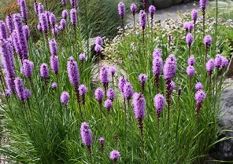
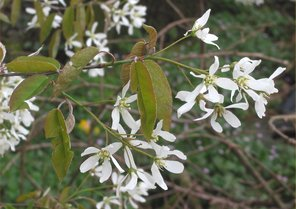
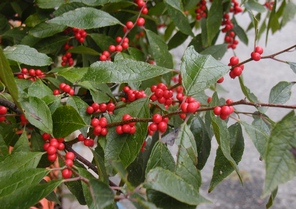

Native Plants of the Year for 2011
|  |
Blazing Star(Liatris spicata)Blazing star's upright purple flower spikes provide a bright long-blooming accent in the garden in July and August. An excellent cut flower, Liatris attract butterflies and is a good native plant alternative to purple loosestrife Lythrum salicaria. | ||
|  |
Allegheny Serviceberry(Amelanchier laevis)This small to medium-sized tree is one of the first to flower each spring and also provides stunning fall color. The sweet red-purple berries in June attract many species of birds. Serviceberry is a great tree for landscapes and can be utilized as a native alternative to the invasive callery pear Pyrus calleryana. | ||
|  |
Common Winterberry(Ilex verticillata)Common winterberry produces brilliant red berries that attract birds late into the winter. Cut branches offer a colorful accent to holiday wreaths and decorations. Native to swampy areas, winterberry is a low maintenance plant that will thrive in wet or well-drained sites. Both mail and female plants are required for fruit set; one male is sufficient to pollinate ten female plants. |